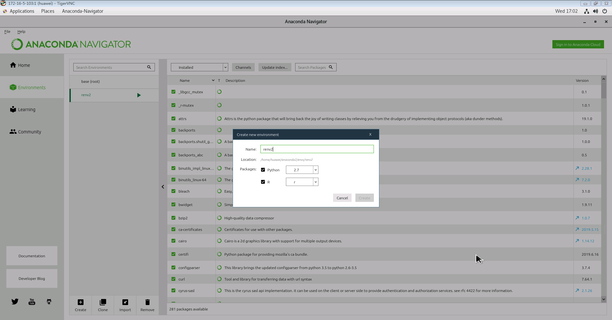
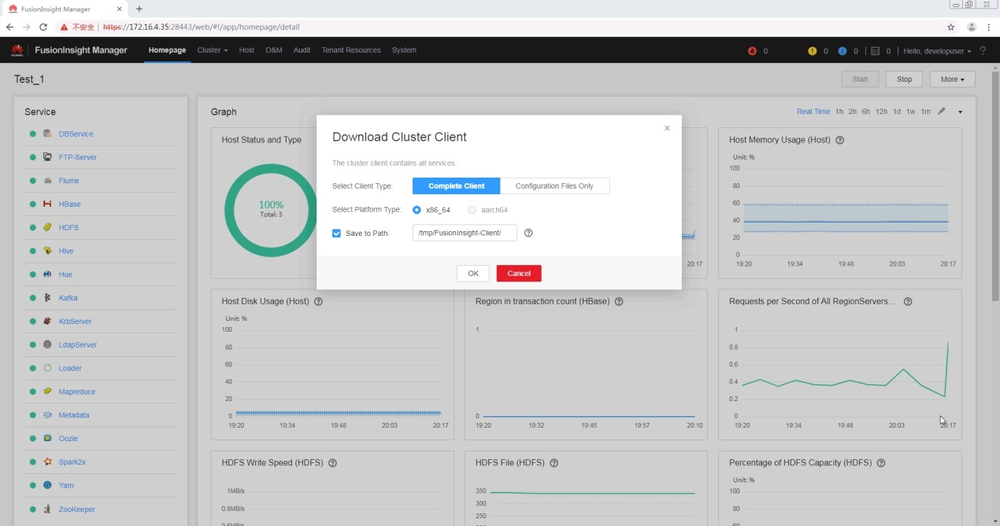
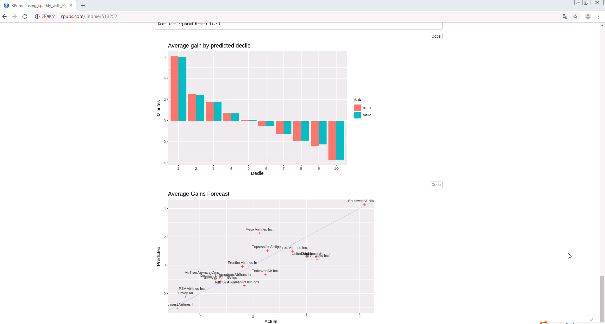
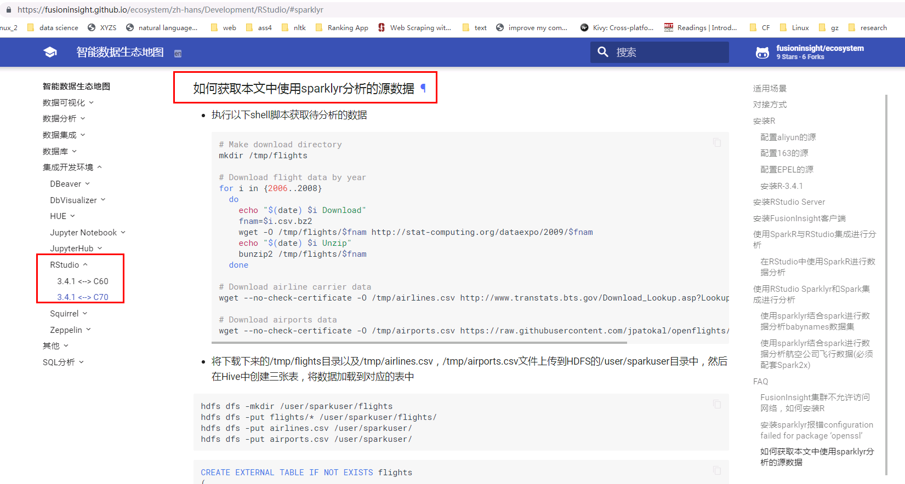
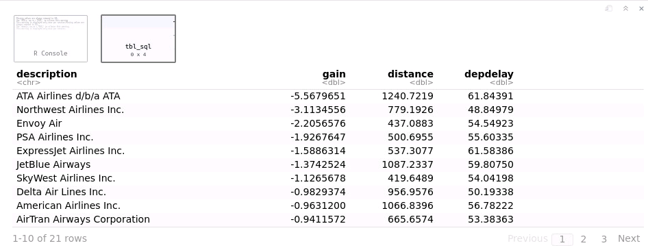
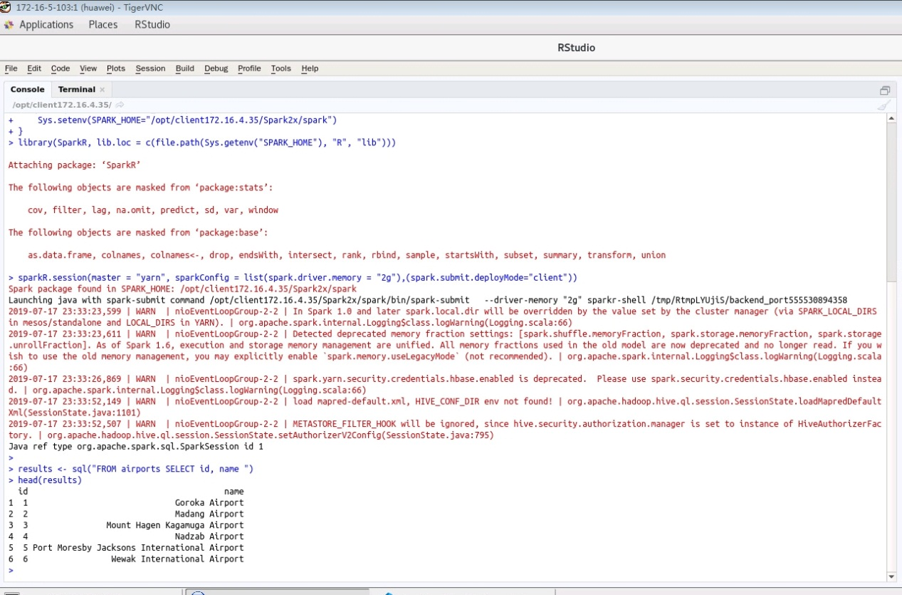
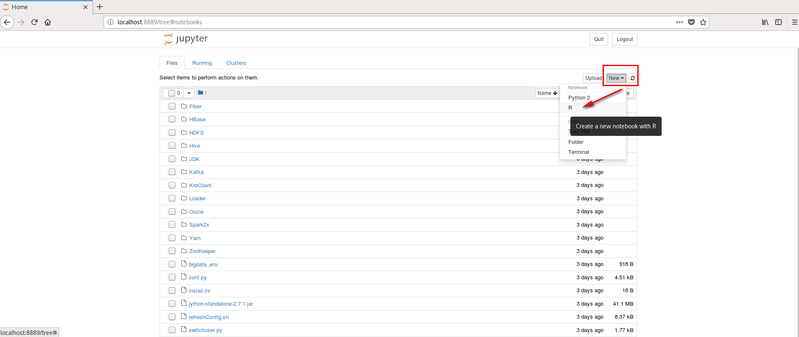
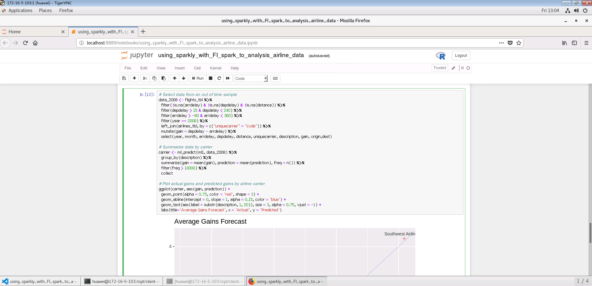

Aanconda对接FusionInsight HD¶
适用场景¶
Anaconda 2-2019.03-Linux-x86_64 ↔ FusionInsight HD 6.5 (Spark2x)
产品介绍¶
Anaconda
Anaconda 是一个免费，易于安装的软件包管理器，环境管理器和python环境管理软件，其中包含1,000多个带有免费社区支持的开源软件包。 Anaconda可以部署在Windows，macOS以及Linux上。
更多信息请登录官网了解:Anaconda
测试环境物理拓扑结构图¶

说明：如果直接在带有图形界面的客户端主机工作，可以不用安装vnc客户端以及vnc Server
测试环境相关产品版本¶
- Anaconda2-2019.03-Linux-x86_64
- FusionInsight HD 6.5.1
- Spark 2.3.2
- R version 3.5.1 (2018-07-02)
- RStudio 1.1.456
- Python 2.7.16 |Anaconda, Inc.| (default, Mar 14 2019, 21:00:58)
- Jypyter Notebook 5.7.8
Anaconda同FusionInsight HD交互的多种方式¶
(1) 使用R语言
-
RStudio
-
方案1：使用sparklyr在RStudio中以交互方式将R代码提交到HD Spark集群
说明：通过使用sparklyr来对航空公司航班进行数据分析，可查看在线demo http://rpubs.com/jinbnie/513252
-
方案2: 使用SparkR在RStudio中以交互方式将R代码提交到HD Spark集群
说明:使用SparkR读取对接集群hive表里的数据
-
-
Jupyter Notebook
-
方案3：使用sparklyr在jupyter notebook中以交互方式将R代码提交到HD Spark集群
说明: 与方案1的R代码一样，唯一的区别是交互环境换成了jupyter notebook
-
(2) 使用python语言
-
Jupyter Notebook
-
方案4：在jupyter notebook中以交互方式将python代码提交到HD Spark集群
说明: 使用python接口，读取对接集群hdfs中的数据，完成一次经典的spark word count演示样例
-
前提条件¶
- FusionInsight HD 6.5 环境安装完成
- linux 客户端主机root权限
- 测试环境相关windows跳板机，linux客户端主机以及对接FI HD集群网络互通
测试环境准备¶
1. 在Linux客户端节点上安装和配置VNC服务器（如果可直接在GUI客户端环境中工作此步骤可省略）
请参考： How to Install and Configure VNC Server on CentOS 7
2.安装 Anaconda
参考Anaconda官方文档：https://docs.anaconda.com/anaconda/install/linux/
下载Anaconda安装包
wget https://repo.anaconda.com/archive/Anaconda2-2019.03-Linux-x86_64.sh
Enter the following to install Anaconda for Python 2.7:
使用如下命令安装Anaconda
说明
~/.bashrc 文件会在anaconda安装过程中初始化，请在安装前备份此配置文件
cp ~/.bashrc ~/.bashrc.bak bash Anaconda2-2019.03-Linux-x86_64.sh
-
安装程序将提示“In order to continue the installation process, please review the license agreement.”单击Enter以查看许可条款。
-
滚动到许可条款的底部，然后输入“yes”以表示同意。
-
安装程序提示您单击Enter接受默认安装位置，按CTRL-C取消安装，或指定备用安装目录。如果您接受默认安装位置，则安装程序将显示“PREFIX=/home/{username}/anaconda<2 or 3>”并继续安装。可能需要几分钟才能完成。
注意： 推荐使用默认安装位置，如果使用非root用户进行交互，请安装在其他可访问的路径，比如/opt，否则之后会报关于用户权限的问题
-
安装程序提示“Do you wish the installer to initialize Anaconda2 by running conda init?”推荐填写 “yes”。
-
安装完成，会显示 “Thank you for installing Anaconda<2 or 3>!”
- 完成后会提供一个PyCharm关于Anaconda的安装包链接 https://www.anaconda.com/pycharm.
-
关闭并打开终端窗口，以使安装生效，
mv ~/.bashrc ~/.bashrc.anaconda cp ~/.bashrc.bak ~/.bashrc source ~/.bashrc.anaconda
3.创建R交互环境并且安装、运行RStudio
参考：http://docs.anaconda.com/anaconda/navigator/tutorials/create-r-environment/
vi ~/.condarc
可以将如下内容添加到 ~/.condarc 文件中来增加conda相关包的下载速度
channels: - https://mirrors.ustc.edu.cn/anaconda/pkgs/main/ - https://mirrors.ustc.edu.cn/anaconda/cloud/conda-forge/ - https://mirrors.tuna.tsinghua.edu.cn/anaconda/pkgs/free/ - defaults show_channel_urls: true
启动 anaconda navigator
anaconda-navigator &
创建一个新的编译环境，比如起名为renv2
Python :2.7
R:r

回到Home, 安装 rstudio

启动 RStudio
conda env list conda activate renv2 rstudio &

4.安装 FusionInsight HD 客户端
打开浏览器，登录FusionInsight Mananger，然后下载客户端


在Linux客户端节点上以root身份登录，运行下面的命令以安装HD客户端
su – root scp root@172.16.4.32:/tmp/FusionInsight-Client/FusionInsight_Services_Client.tar /opt/FusionInsight_Services_Client172.16.4.35.tar tar xvf FusionInsight_Services_Client172.16.4.35.tar tar xvf FusionInsight_Services_ClientConfig.tar cd FusionInsight_Services_ClientConfig/ ./install.sh /opt/client172.16.4.35/
将客户端节点ip，主机名加入对接集群所有节点的/etc/hosts文件下，这一步的目的是起spark任务的时候，worker节点（集群节点）能够识别到driver主机（客户端节点）：

启动 RStudio
su - huawei cd /opt/client172.16.4.35/ source bigdata_env kinit developuser klist source ~/.bashrc.anaconda conda activate renv2 rstudio &

方案1：使用sparklyr在RStudio中以交互方式将R代码提交到HD Spark集群¶
说明：通过使用sparklyr来对航空公司航班进行数据分析，可查看在线demo http://rpubs.com/jinbnie/513252

注意： 以下 7 步的源码可以在如下链接中获取：RStudio

第5,7步进行相关适配可以对接 FI HD 6.5(Spark 2.3.2).
Step 1 安装相关包
install.packages("sparklyr")
install.packages("dplyr")
install.packages("ggplot2")
install.packages("babynames")
install.packages("dygraphs")
install.packages("rbokeh")
Step 2 连接spark
library(sparklyr)
library(dplyr)
library(ggplot2)
options(bitmapType = 'cairo')
Sys.setenv(JAVA_HOME="/opt/client172.16.4.35/JDK/jdk-8u201")
Sys.setenv(SPARK_HOME="/opt/client172.16.4.35/Spark2x/spark")
spark_version_from_home(Sys.getenv("SPARK_HOME"))
Sys.setenv(SPARK_HOME_VERSION="2.3.2")
sc <- spark_connect(master = "yarn-client", version = "2.3.2", spark_home = "/opt/client172.16.4.35/Spark2x/spark")
Step 3 将提前建好的hive表存入缓存
说明：具体数据准备的方法请参考生态地图->Rstudio->如何获取本文中使用sparklyr分析的源数据

#Use tbl_cache to load the flights table into memory. Caching tables will make analysis much faster. Create a dplyr reference to the Spark DataFrame. # Cache flights Hive table into Spark tbl_cache(sc, 'flights') flights_tbl <- tbl(sc, 'flights') # Cache airlines Hive table into Spark tbl_cache(sc, 'airlines') airlines_tbl <- tbl(sc, 'airlines') # Cache airports Hive table into Spark tbl_cache(sc, 'airports') airports_tbl <- tbl(sc, 'airports')
Step 4 建模
#Filter the data to contain only the records to be used in the fitted model. Join carrier descriptions for reference. Create a new variable called gain which represents the amount of time gained (or lost) in flight.
# Filter records and create target variable 'gain'
model_data <- flights_tbl %>%
filter(!is.na(arrdelay) & !is.na(depdelay) & !is.na(distance)) %>%
filter(depdelay > 15 & depdelay < 240) %>%
filter(arrdelay > -60 & arrdelay < 360) %>%
filter(year >= 2003 & year <= 2007) %>%
left_join(airlines_tbl, by = c("uniquecarrier" = "code")) %>%
mutate(gain = depdelay - arrdelay) %>%
select(year, month, arrdelay, depdelay, distance, uniquecarrier, description, gain)
# Summarize data by carrier
model_data %>%
group_by(uniquecarrier) %>%
summarize(description = min(description), gain=mean(gain),
distance=mean(distance), depdelay=mean(depdelay)) %>%
select(description, gain, distance, depdelay) %>%
arrange(gain)

Step 5 训练模型
#Predict time gained or lost in flight as a function of distance, departure delay, and airline carrier. # Partition the data into training and validation sets model_partition <- model_data %>% sdf_random_split(train = 0.8, valid = 0.2, seed = 5555) # Fit a linear model ml1 <- model_partition$train %>% ml_linear_regression(gain ~ distance + depdelay + uniquecarrier) # Summarize the linear model summary(ml1)

Step 6 评估模型表现
#Compare the model performance using the validation data.
# Calculate average gains by predicted decile
model_deciles <- lapply(model_partition, function(x) {
ml_predict(ml1, x) %>%
mutate(decile = ntile(desc(prediction), 10)) %>%
group_by(decile) %>%
summarize(gain = mean(gain)) %>%
select(decile, gain) %>%
collect()
})
# Create a summary dataset for plotting
deciles <- rbind(
data.frame(data = 'train', model_deciles$train),
data.frame(data = 'valid', model_deciles$valid),
make.row.names = FALSE
)
# Plot average gains by predicted decile
deciles %>%
ggplot(aes(factor(decile), gain, fill = data)) +
geom_bar(stat = 'identity', position = 'dodge') +
labs(title = 'Average gain by predicted decile', x = 'Decile', y = 'Minutes')

Step 7 将预测可视化
#Compare actual gains to predicted gains for an out of time sample.
# Select data from an out of time sample
data_2008 <- flights_tbl %>%
filter(!is.na(arrdelay) & !is.na(depdelay) & !is.na(distance)) %>%
filter(depdelay > 15 & depdelay < 240) %>%
filter(arrdelay > -60 & arrdelay < 360) %>%
filter(year == 2008) %>%
left_join(airlines_tbl, by = c("uniquecarrier" = "code")) %>%
mutate(gain = depdelay - arrdelay) %>%
select(year, month, arrdelay, depdelay, distance, uniquecarrier, description, gain, origin,dest)
# Summarize data by carrier
carrier <- ml_predict(ml1, data_2008) %>%
group_by(description) %>%
summarize(gain = mean(gain), prediction = mean(prediction), freq = n()) %>%
filter(freq > 10000) %>%
collect
# Plot actual gains and predicted gains by airline carrier
ggplot(carrier, aes(gain, prediction)) +
geom_point(alpha = 0.75, color = 'red', shape = 3) +
geom_abline(intercept = 0, slope = 1, alpha = 0.15, color = 'blue') +
geom_text(aes(label = substr(description, 1, 20)), size = 3, alpha = 0.75, vjust = -1) +
labs(title='Average Gains Forecast', x = 'Actual', y = 'Predicted')

方案2: 使用SparkR在RStudio中以交互方式将R代码提交到HD Spark集群¶
说明：使用SparkR读取预存的hive表数据
启动 RStudio
cd /opt/client172.16.4.35/ source ~/.bashrc.anaconda conda activate renv2 source bigdata_env kinit developuser klist rstudio &
if (nchar(Sys.getenv("SPARK_HOME")) < 1) {
Sys.setenv(SPARK_HOME="/opt/client172.16.4.35/Spark2x/spark")
}
library(SparkR, lib.loc = c(file.path(Sys.getenv("SPARK_HOME"), "R", "lib")))
sparkR.session(master = "yarn", sparkConfig = list(spark.driver.memory = "2g"),(spark.submit.deployMode="client"))
results <- sql("FROM airports SELECT id, name ")
head(results)

方案3：使用sparklyr在jupyter notebook中以交互方式将R代码提交到HD Spark集群¶
step 1:启动 Jupyter Notebook
cd /opt/client172.16.4.35/ source bigdata_env kinit developuser source ~/.bashrc.anaconda conda env list conda activate renv2 sudo chmod -R 777 /opt/client172.16.4.35 jupyter-notebook &
step 2:创建一个新的 R Notebook

step 3:在Jupyter Notebook提交同方案1中相同的R代码，查看结果

方案4：在jupyter notebook中以交互方式将python代码提交到HD Spark集群¶
说明: 使用python接口，读取对接集群hdfs中的数据，完成一次经典的spark word count演示样例
step 1:启动 PySpark
cd /opt/client172.16.4.35/ source bigdata_env kinit developuser klist source ~/.bashrc.anaconda export PYSPARK_DRIVER_PYTHON="ipython" export PYSPARK_DRIVER_PYTHON_OPTS="notebook" pyspark --master yarn --deploy-mode client &
step 2:创建一个新的Python Notebook

step3:在Jupyter Notebook中提交如下的python代码
# spark-wordcount.py
from pyspark import SparkConf
from pyspark import SparkContext
conf = SparkConf()
conf.setAppName('spark-wordcount_from172.16.5.103')
sc = SparkContext(conf=conf)
distFile = sc.textFile('hdfs://hacluster/user/developuser/airlines.csv')
nonempty_lines = distFile.filter(lambda x: len(x) > 0)
print 'Nonempty lines', nonempty_lines.count()
words = nonempty_lines.flatMap(lambda x: x.split(' '))
wordcounts = words.map(lambda x: (x, 1)) \
.reduceByKey(lambda x, y: x+y) \
.map(lambda x: (x[1], x[0])).sortByKey(False)
print 'Top 100 words:'
print wordcounts.take(100)